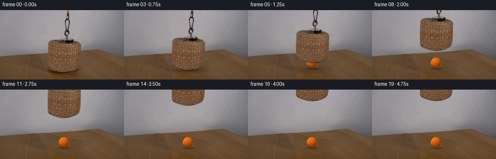
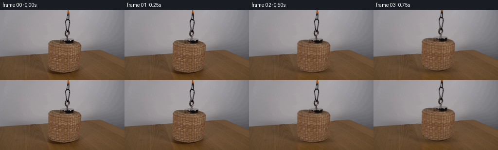
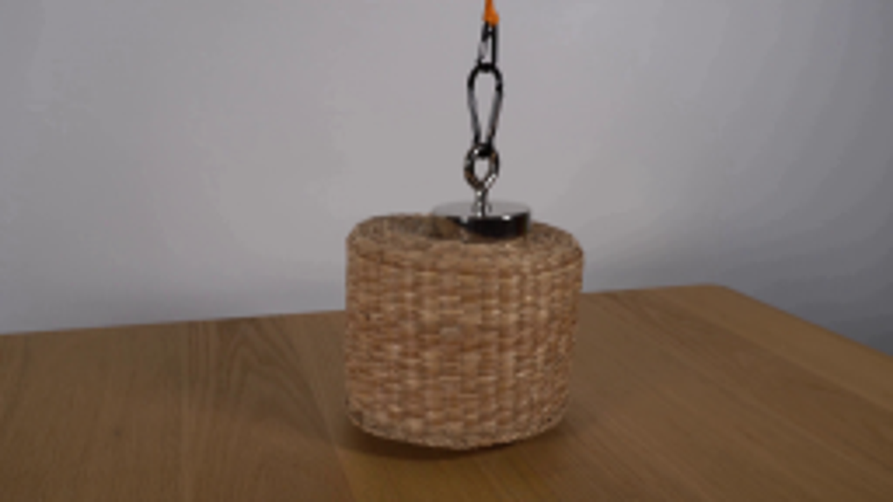
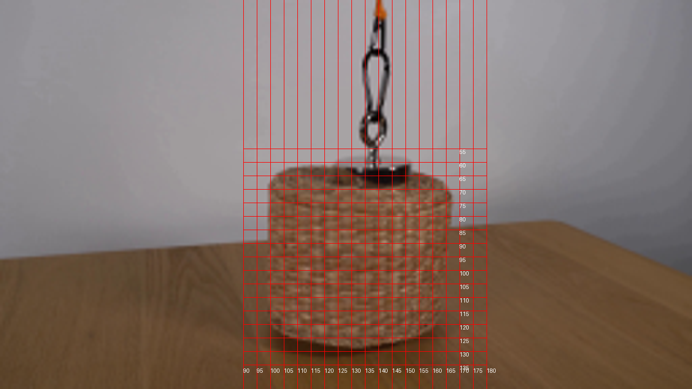
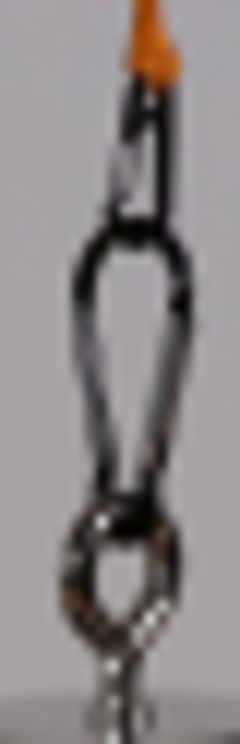
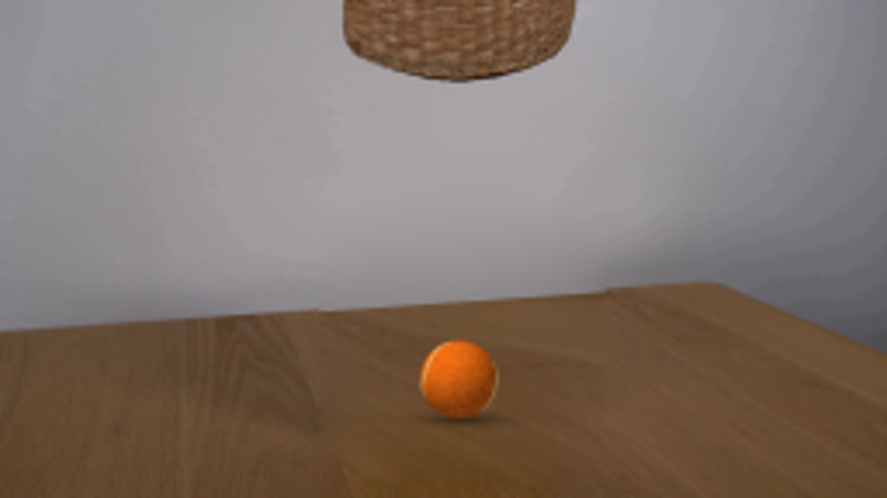

CODING AGENTS AS PIXEL WORLD MODELS
traex/GPT-6.1-Sol · 0169
点击播放 · 原生 RGB 像素
逐轮保存的候选
回放视频、检查图与代码变化。
每份候选均可单独播放。实际图片检查记录在下方工具轨迹中。
候选 01播放与检查图
点击播放 · 原生 RGB 像素

展开代码变化
--- 上一保存版本
+++ 本次保存版本
@@ -0,0 +1,187 @@
+from pathlib import Path
+import numpy as np
+import cv2
+from PIL import Image, ImageDraw, ImageFilter
+from scipy.ndimage import gaussian_filter
+import artifact_io
+
+ROOT = Path(__file__).resolve().parent
+W,H=256,144
+S=4
+
+def polygon_alpha(points):
+ m=Image.new('L',(W*S,H*S));d=ImageDraw.Draw(m)
+ d.polygon([(round(x*S),round(y*S)) for x,y in points],fill=255)
+ return np.asarray(m.resize((W,H),Image.Resampling.LANCZOS),dtype=float)/255
+
+def setup(im):
+ yy,xx=np.mgrid[:H,:W].astype(float)
+ basket_points=[(123.5,61.2),(117,61.2),(110.5,62),(105,63),(101.5,65.3),(99.5,68.5),
+ (98.9,72.0),(98.8,98),(99,113),(99.7,118),(102,121.5),(107,124),(114,126.3),
+ (124,128.7),(133,129.4),(143,128.2),(152,125.8),(160,122),(163.8,117.5),
+ (166,109),(166.8,94),(167.1,74),(166.5,70),(164.9,67.5),(162,65.5),(157,64),(151.3,63.1),
+ (151.6,61),(149.5,58.6),(144,57.7),(135,57.7),(129,58.8),(124.3,60)]
+ body=polygon_alpha(basket_points)
+ # Hanging hardware, with its empty interior left transparent.
+ # Neutral wall is estimated from directly neighboring columns.
+ wall=np.zeros_like(im,dtype=float)
+ for y in range(H):
+ for c in range(3):
+ wall[y,:,c]=np.interp(np.arange(W),[128,150],[im[y,128,c],im[y,150,c]])
+ delta=np.max(np.abs(im-wall),axis=2)
+ chain_zone=(xx>131)&(xx<146)&(yy<59)
+ chain=np.clip((delta-1.4)/20,0,1)*chain_zone
+ alpha=np.maximum(body,chain)
+ # Smooth wall estimate from the neighboring wall; the object is not used.
+ edge=np.where(xx<203,96-14*xx/203,82+20*(xx-203)/53)
+ obj=cv2.dilate((alpha>.01).astype('uint8'),np.ones((5,5),np.uint8))
+ # Fill wall using a gently varying low-order surface, retaining small texture.
+ valid=(yy<edge-2)&(obj==0)
+ X=np.stack([np.ones_like(xx),xx/256,yy/144,(xx/256)**2,(yy/144)**2,(xx/256)*(yy/144),
+ (xx/256)**3,(yy/144)**3,(xx/256)**2*(yy/144),(xx/256)*(yy/144)**2],axis=-1)
+ surface=np.empty_like(im,dtype=float)
+ for c in range(3):
+ coef=np.linalg.lstsq(X[valid],im[...,c][valid],rcond=None)[0]
+ surface[...,c]=X@coef
+ # Sample actual table grain on the right at equivalent depth from its back edge.
+ sx=180+(xx-94)*.89
+ sx=np.clip(sx,170,255).astype('float32')
+ se=np.where(sx<203,96-14*sx/203,82+20*(sx-203)/53)
+ sy=se+(yy-edge)*(144-se)/(144-edge)
+ sy=np.clip(sy,0,143).astype('float32')
+ grain=cv2.remap(im.astype('float32'),sx,sy,cv2.INTER_CUBIC,borderMode=cv2.BORDER_REFLECT)
+ source=grain.copy()
+ # Exact background line runs behind the covered setup.
+ a=np.clip(yy-edge+.5,0,1)[...,None]
+ source=source*a+surface*(1-a)
+ # Poisson blending keeps wood grain while matching the surrounding illumination.
+ remove=polygon_alpha([(94,60),(122,54),(128,0),(149,0),(152,56),(157,60),(172,66),(174,116),
+ (171,132),(155,139),(107,138),(94,129)])
+ remove=cv2.dilate((remove>.05).astype('uint8'),np.ones((3,3),np.uint8))
+ wallmask=(remove>0)&(yy<edge-.5)
+ # table inpainting texture with seamless gradient integration
+ tablemask=((remove>0)&(yy>=edge-.5)).astype('uint8')*255
+ # table portion of donor image uses smooth wall above its edge as context
+ clean=cv2.seamlessClone(np.clip(source,0,255).astype('uint8'),im.astype('uint8'),tablemask,
+ (W//2,H//2),cv2.NORMAL_CLONE).astype(float)
+ clean[wallmask]=surface[wallmask]
+ # Discrete seamlessClone shifts cropped masks if their bounds are not centered;
+ # explicit full image gradient-domain reconstruction below avoids that shift.
+ clean=poisson_fill(im.astype(float),source,remove.astype(bool))
+ # Store the original basket texture in a premultiplied, edge-decontaminated layer.
+ foreground=im.astype(float)-clean*(1-alpha[...,None])
+ foreground=np.clip(foreground,0,255*alpha[...,None])
+ return clean,alpha,foreground
+
+def poisson_fill(target,source,mask):
+ from scipy.sparse import lil_matrix
+ from scipy.sparse.linalg import spsolve
+ h,w=mask.shape
+ ids=-np.ones((h,w),int);ids[mask]=np.arange(mask.sum())
+ A=lil_matrix((mask.sum(),mask.sum()),dtype=float)
+ b=np.zeros((mask.sum(),3))
+ # Gradients of wood donor integrated with the original boundary values.
+ for y,x in np.argwhere(mask):
+ i=ids[y,x];cnt=0
+ for dy,dx in [(-1,0),(1,0),(0,-1),(0,1)]:
+ ny,nx=y+dy,x+dx
+ if ny<0 or ny>=h or nx<0 or nx>=w:continue
+ cnt+=1
+ b[i]+=source[y,x]-source[ny,nx]
+ if mask[ny,nx]: A[i,ids[ny,nx]]=-1
+ else:b[i]+=target[ny,nx]
+ A[i,i]=cnt
+ result=target.copy();result[mask]=spsolve(A.tocsr(),b)
+ return np.clip(result,0,255)
+
+def ball_layer():
+ # Analytic, softly lit felt sphere with the two curved tennis-ball seam arcs.
+ h,w=H*S,W*S
+ Y,X=np.mgrid[:h,:w].astype(float);X=(X+.5)/S;Y=(Y+.5)/S
+ cx,cy,r=132.5,109.7,11.2
+ nx=(X-cx)/r;ny=(Y-cy)/r
+ rho=nx*nx+ny*ny
+ z=np.sqrt(np.maximum(0,1-rho))
+ coverage=np.clip((1-np.sqrt(rho))*r*S+.5,0,1)
+ n=np.stack([nx,-ny,z],axis=-1)
+ light=np.array([-.45,.67,.59]);light/=np.linalg.norm(light)
+ diffuse=np.maximum(0,n@light)
+ illumination=.47+.49*diffuse+.055*z
+ base=np.array([245,111,20])
+ tex=np.random.default_rng(236).normal(size=(h,w))
+ tex=gaussian_filter(tex,.55)
+ rgb=base[None,None,:]*illumination[...,None]+tex[...,None]*4.5
+ # A tennis seam lies on a gently curved spherical track, not a painted flat oval.
+ # Two arcs sweep around the sphere toward the silhouette.
+ # Trace a spherical curve and project its visible side.
+ theta=np.linspace(0,2*np.pi,1500)
+ v=np.stack([np.cos(theta),np.sin(theta),.40*np.cos(2*theta)],axis=1)
+ v/=np.linalg.norm(v,axis=1)[:,None]
+ ay=.60; az=-.40; ax=.38
+ Ry=np.array([[np.cos(ay),0,np.sin(ay)],[0,1,0],[-np.sin(ay),0,np.cos(ay)]])
+ Rx=np.array([[1,0,0],[0,np.cos(ax),-np.sin(ax)],[0,np.sin(ax),np.cos(ax)]])
+ Rz=np.array([[np.cos(az),-np.sin(az),0],[np.sin(az),np.cos(az),0],[0,0,1]])
+ v=v@(Rz@Rx@Ry).T
+ seam=Image.new('L',(w,h));d=ImageDraw.Draw(seam)
+ pts=[]
+ for p in v:
+ if p[2]>=-.025:
+ pts.append(((cx+r*p[0])*S,(cy-r*p[1])*S))
+ else:
+ if len(pts)>1:d.line(pts,fill=255,width=3)
+ pts=[]
+ if len(pts)>1:d.line(pts,fill=255,width=3)
+ sm=np.asarray(seam.filter(ImageFilter.GaussianBlur(.6)),float)/255
+ seamcolor=np.array([248,204,126])[None,None,:]*(.64+.32*diffuse[...,None])
+ rgb=rgb*(1-sm[...,None]*.86)+seamcolor*sm[...,None]*.86
+ rgb=np.clip(rgb,0,255)
+ # Soft little felt fuzz at the outline.
+ alpha=coverage
+ premult=rgb*alpha[...,None]
+ premult=cv2.resize(premult,(W,H),interpolation=cv2.INTER_AREA)
+ alpha=cv2.resize(alpha,(W,H),interpolation=cv2.INTER_AREA)
+ return premult,alpha
+
+def translate(a,dx,dy):
+ return cv2.warpAffine(a.astype('float32'),np.array([[1,0,dx],[0,1,dy]],dtype='float32'),(W,H),
+ flags=cv2.INTER_LINEAR,borderMode=cv2.BORDER_CONSTANT,borderValue=0)
+
+def main():
+ im=np.asarray(Image.open(ROOT/'first_frame.png').convert('RGB'))
+ clean,alpha,fg=setup(im)
+ Image.fromarray(np.uint8(clean)).save(ROOT/'.tmp/background.png')
+ Image.fromarray(np.uint8(alpha*255)).save(ROOT/'.tmp/alpha.png')
+ premult,ba=ball_layer()
+ yy,xx=np.mgrid[:H,:W].astype(float)
+ # Ball's fixed contact and soft ambient shadow.
+ bs=.30*np.exp(-(((xx-133)/12.7)**2+((yy-120.7)/2.3)**2)*1.2)
+ bs+=.13*np.exp(-(((xx-133)/8.8)**2+((yy-121)/.8)**2))
+ frames=[]
+ for i in range(20):
+ t=i/4
+ if i<2:
+ frames.append(im.copy());continue
+ u=np.clip((t-.35)/3.75,0,1)
+ # Smooth real-time winch acceleration, then cruise, then stop.
+ # integrated velocity profile gives a short acceleration at both ends.
+ ac=.17
+ if u<ac: q=u*u/(2*ac*(1-ac))
+ elif u>1-ac:q=1-(1-u)**2/(2*ac*(1-ac))
+ else:q=(u-ac/2)/(1-ac)
+ rise=106*q
+ dx=.45*np.sin(np.pi*u)*np.sin(2.1*np.pi*u)
+ bg=clean.copy()
+ width=35+rise*.17;height=6+rise*.10
+ shadow=(.34*np.exp(-rise/31))*np.exp(-((xx-133-dx*.5)/width)**2-((yy-123)/height)**2)
+ shadow+=.15*np.exp(-rise/5.5)*np.exp(-((xx-133)/32)**2-((yy-126)/2.8)**2)
+ bg*=1-(shadow+bs)[...,None]
+ # The ball remains on the tabletop throughout; only the basket occludes it.
+ bg=bg*(1-ba[...,None])+premult
+ a=translate(alpha,dx,-rise)
+ f=translate(fg,dx,-rise)
+ frame=bg*(1-a[...,None])+f
+ frames.append(np.uint8(np.clip(frame,0,255).round()))
+ frames=np.stack(frames)
+ artifact_io.save(frames,ROOT)
+
+if __name__=='__main__':main()
候选 02播放与检查图
点击播放 · 原生 RGB 像素

展开代码变化
--- 上一保存版本
+++ 本次保存版本
@@ -110,6 +110,9 @@
base=np.array([245,111,20])
tex=np.random.default_rng(236).normal(size=(h,w))
tex=gaussian_filter(tex,.55)
+ grain=np.random.default_rng(237).normal(size=(H,W))
+ grain=cv2.resize(grain,(w,h),interpolation=cv2.INTER_LINEAR)
+ tex=tex+grain*.8
rgb=base[None,None,:]*illumination[...,None]+tex[...,None]*4.5
# A tennis seam lies on a gently curved spherical track, not a painted flat oval.
# Two arcs sweep around the sphere toward the silhouette.
@@ -117,7 +120,7 @@
theta=np.linspace(0,2*np.pi,1500)
v=np.stack([np.cos(theta),np.sin(theta),.40*np.cos(2*theta)],axis=1)
v/=np.linalg.norm(v,axis=1)[:,None]
- ay=.60; az=-.40; ax=.38
+ ay=.12; az=-.35; ax=.12
Ry=np.array([[np.cos(ay),0,np.sin(ay)],[0,1,0],[-np.sin(ay),0,np.cos(ay)]])
Rx=np.array([[1,0,0],[0,np.cos(ax),-np.sin(ax)],[0,np.sin(ax),np.cos(ax)]])
Rz=np.array([[np.cos(az),-np.sin(az),0],[np.sin(az),np.cos(az),0],[0,0,1]])
候选 03播放与检查图
点击播放 · 原生 RGB 像素


展开代码变化
--- 上一保存版本
+++ 本次保存版本
@@ -58,15 +58,7 @@
remove=polygon_alpha([(94,60),(122,54),(128,0),(149,0),(152,56),(157,60),(172,66),(174,116),
(171,132),(155,139),(107,138),(94,129)])
remove=cv2.dilate((remove>.05).astype('uint8'),np.ones((3,3),np.uint8))
- wallmask=(remove>0)&(yy<edge-.5)
- # table inpainting texture with seamless gradient integration
- tablemask=((remove>0)&(yy>=edge-.5)).astype('uint8')*255
- # table portion of donor image uses smooth wall above its edge as context
- clean=cv2.seamlessClone(np.clip(source,0,255).astype('uint8'),im.astype('uint8'),tablemask,
- (W//2,H//2),cv2.NORMAL_CLONE).astype(float)
- clean[wallmask]=surface[wallmask]
- # Discrete seamlessClone shifts cropped masks if their bounds are not centered;
- # explicit full image gradient-domain reconstruction below avoids that shift.
+ # Integrate sampled background gradients with fixed surrounding pixels.
clean=poisson_fill(im.astype(float),source,remove.astype(bool))
# Store the original basket texture in a premultiplied, edge-decontaminated layer.
foreground=im.astype(float)-clean*(1-alpha[...,None])
@@ -113,12 +105,12 @@
grain=np.random.default_rng(237).normal(size=(H,W))
grain=cv2.resize(grain,(w,h),interpolation=cv2.INTER_LINEAR)
tex=tex+grain*.8
- rgb=base[None,None,:]*illumination[...,None]+tex[...,None]*4.5
+ rgb=base[None,None,:]*illumination[...,None]+tex[...,None]*3.8
# A tennis seam lies on a gently curved spherical track, not a painted flat oval.
# Two arcs sweep around the sphere toward the silhouette.
# Trace a spherical curve and project its visible side.
theta=np.linspace(0,2*np.pi,1500)
- v=np.stack([np.cos(theta),np.sin(theta),.40*np.cos(2*theta)],axis=1)
+ v=np.stack([np.cos(theta),np.sin(theta),1.15*np.cos(2*theta)],axis=1)
v/=np.linalg.norm(v,axis=1)[:,None]
ay=.12; az=-.35; ax=.12
Ry=np.array([[np.cos(ay),0,np.sin(ay)],[0,1,0],[-np.sin(ay),0,np.cos(ay)]])
可观测工具轨迹
实际执行的命令与返回图片。
命令 1exit 0
/bin/bash -lc "ls -la && cat prompt.txt && printf '\\n---RULES---\\n' && cat GENERATION_RULES.md"
命令 2exit 0
/bin/bash -lc "cat artifact_io.py && python - <<'PY'
from PIL import Image
im=Image.open('first_frame.png');print(im.size); im.resize((1024,576)).save('.tmp/first_large.png')
PY"命令 3exit 0
/bin/bash -lc "python - <<'PY'
from PIL import Image
im=Image.open('first_frame.png');im.resize((1024,576),Image.Resampling.NEAREST).save('.tmp/nearest.png')
import importlib.util
for x in ['scipy','cv2','numpy']:
print(x,importlib.util.find_spec(x) is not None)
PY"命令 4exit 0
/bin/bash -lc "python - <<'PY'
import cv2, numpy as np
from PIL import Image
im=np.asarray(Image.open('first_frame.png'))
# crop to see exact object geometry with grid
out=Image.open('first_frame.png').resize((1280,720))
from PIL import ImageDraw
d=ImageDraw.Draw(out)
for x in range(90,181,5):
d.line((x*5,0,x*5,720),fill=(255,0,0),width=1);d.text((x*5,680),str(x),fill=(255,255,255))
for y in range(55,136,5):
d.line((90*5,y*5,180*5,y*5),fill=(255,0,0),width=1);d.text((850,y*5),str(y),fill='white')
out.save('.tmp/grid.png')
PY"命令 5exit 0
/bin/bash -lc "python - <<'PY'
from PIL import Image
im=Image.open('first_frame.png');im.crop((128,0,148,62)).resize((240,744)).save('.tmp/chain.png')
PY"命令 6exit 0
/bin/bash -lc "cat > generate.py <<'PY'
from pathlib import Path
import numpy as np
import cv2
from PIL import Image, ImageDraw, ImageFilter
from scipy.ndimage import gaussian_filter
import artifact_io
ROOT = Path(__file__).resolve().parent
W,H=256,144
S=4
def polygon_alpha(points):
m=Image.new('L',(W*S,H*S));d=ImageDraw.Draw(m)
d.polygon([(round(x*S),round(y*S)) for x,y in points],fill=255)
return np.asarray(m.resize((W,H),Image.Resampling.LANCZOS),dtype=float)/255
def setup(im):
yy,xx=np.mgrid[:H,:W].astype(float)
basket_points=[(123.5,61.2),(117,61.2),(110.5,62),(105,63),(101.5,65.3),(99.5,68.5),
(98.9,72.0),(98.8,98),(99,113),(99.7,118),(102,121.5),(107,124),(114,126.3),
(124,128.7),(133,129.4),(143,128.2),(152,125.8),(160,122),(163.8,117.5),
(166,109),(166.8,94),(167.1,74),(166.5,70),(164.9,67.5),(162,65.5),(157,64),(151.3,63.1),
(151.6,61),(149.5,58.6),(144,57.7),(135,57.7),(129,58.8),(124.3,60)]
body=polygon_alpha(basket_points)
# Hanging hardware, with its empty interior left transparent.
# Neutral wall is estimated from directly neighboring columns.
wall=np.zeros_like(im,dtype=float)
for y in range(H):
for c in range(3):
wall[y,:,c]=np.interp(np.arange(W),[128,150],[im[y,128,c],im[y,150,c]])
delta=np.max(np.abs(im-wall),axis=2)
chain_zone=(xx>131)&(xx<146)&(yy<59)
chain=np.clip((delta-1.4)/20,0,1)*chain_zone
alpha=np.maximum(body,chain)
# Smooth wall estimate from the neighboring wall; the object is not used.
edge=np.where(xx<203,96-14*xx/203,82+20*(xx-203)/53)
obj=cv2.dilate((alpha>.01).astype('uint8'),np.ones((5,5),np.uint8))
# Fill wall using a gently varying low-order surface, retaining small texture.
valid=(yy<edge-2)&(obj==0)
X=np.stack([np.ones_like(xx),xx/256,yy/144,(xx/256)**2,(yy/144)**2,(xx/256)*(yy/144),
(xx/256)**3,(yy/144)**3,(xx/256)**2*(yy/144),(xx/256)*(yy/144)**2],axis=-1)
surface=np.empty_like(im,dtype=float)
for c in range(3):
coef=np.linalg.lstsq(X[valid],im[...,c][valid],rcond=None)[0]
surface[...,c]=X@coef
# Sample actual table grain on the right at equivalent depth from its back edge.
sx=180+(xx-94)*.89
sx=np.clip(sx,170,255).astype('float32')
se=np.where(sx<203,96-14*sx/203,82+20*(sx-203)/53)
sy=se+(yy-edge)*(144-se)/(144-edge)
sy=np.clip(sy,0,143).astype('float32')
grain=cv2.remap(im.astype('float32'),sx,sy,cv2.INTER_CUBIC,borderMode=cv2.BORDER_REFLECT)
source=grain.copy()
# Exact background line runs behind the covered setup.
a=np.clip(yy-edge+.5,0,1)[...,None]
source=source*a+surface*(1-a)
# Poisson blending keeps wood grain while matching the surrounding illumination.
remove=polygon_alpha([(94,60),(122,54),(128,0),(149,0),(152,56),(157,60),(172,66),(174,116),
(171,132),(155,139),(107,138),(94,129)])
remove=cv2.dilate((remove>.05).astype('uint8'),np.ones((3,3),np.uint8))
wallmask=(remove>0)&(yy<edge-.5)
# table inpainting texture with seamless gradient integration
tablemask=((remove>0)&(yy>=edge-.5)).astype('uint8')*255
# table portion of donor image uses smooth wall above its edge as context
clean=cv2.seamlessClone(np.clip(source,0,255).astype('uint8'),im.astype('uint8'),tablemask,
(W//2,H//2),cv2.NORMAL_CLONE).astype(float)
clean[wallmask]=surface[wallmask]
# Discrete seamlessClone shifts cropped masks if their bounds are not centered;
# explicit full image gradient-domain reconstruction below avoids that shift.
clean=poisson_fill(im.astype(float),source,remove.astype(bool))
# Store the original basket texture in a premultiplied, edge-decontaminated layer.
foreground=im.astype(float)-clean*(1-alpha[...,None])
foreground=np.clip(foreground,0,255*alpha[...,None])
return clean,alpha,foreground
def poisson_fill(target,source,mask):
from scipy.sparse import lil_matrix
from scipy.sparse.linalg import spsolve
h,w=mask.shape
ids=-np.ones((h,w),int);ids[mask]=np.arange(mask.sum())
A=lil_matrix((mask.sum(),mask.sum()),dtype=float)
b=np.zeros((mask.sum(),3))
# Gradients of wood donor integrated with the original boundary values.
for y,x in np.argwhere(mask):
i=ids[y,x];cnt=0
for dy,dx in [(-1,0),(1,0),(0,-1),(0,1)]:
ny,nx=y+dy,x+dx
if ny<0 or ny>=h or nx<0 or nx>=w:continue
cnt+=1
b[i]+=source[y,x]-source[ny,nx]
if mask[ny,nx]: A[i,ids[ny,nx]]=-1
else:b[i]+=target[ny,nx]
A[i,i]=cnt
result=target.copy();result[mask]=spsolve(A.tocsr(),b)
return np.clip(result,0,255)
def ball_layer():
# Analytic, softly lit felt sphere with the two curved tennis-ball seam arcs.
h,w=H*S,W*S
Y,X=np.mgrid[:h,:w].astype(float);X=(X+.5)/S;Y=(Y+.5)/S
cx,cy,r=132.5,109.7,11.2
nx=(X-cx)/r;ny=(Y-cy)/r
rho=nx*nx+ny*ny
z=np.sqrt(np.maximum(0,1-rho))
coverage=np.clip((1-np.sqrt(rho))*r*S+.5,0,1)
n=np.stack([nx,-ny,z],axis=-1)
light=np.array([-.45,.67,.59]);light/=np.linalg.norm(light)
diffuse=np.maximum(0,n@light)
illumination=.47+.49*diffuse+.055*z
base=np.array([245,111,20])
tex=np.random.default_rng(236).normal(size=(h,w))
tex=gaussian_filter(tex,.55)
rgb=base[None,None,:]*illumination[...,None]+tex[...,None]*4.5
# A tennis seam lies on a gently curved spherical track, not a painted flat oval.
# Two arcs sweep around the sphere toward the silhouette.
# Trace a spherical curve and project its visible side.
theta=np.linspace(0,2*np.pi,1500)
v=np.stack([np.cos(theta),np.sin(theta),.40*np.cos(2*theta)],axis=1)
v/=np.linalg.norm(v,axis=1)[:,None]
ay=.60; az=-.40; ax=.38
Ry=np.array([[np.cos(ay),0,np.sin(ay)],[0,1,0],[-np.sin(ay),0,np.cos(ay)]])
Rx=np.array([[1,0,0],[0,np.cos(ax),-np.sin(ax)],[0,np.sin(ax),np.cos(ax)]])
Rz=np.array([[np.cos(az),-np.sin(az),0],[np.sin(az),np.cos(az),0],[0,0,1]])
v=v@(Rz@Rx@Ry).T
seam=Image.new('L',(w,h));d=ImageDraw.Draw(seam)
pts=[]
for p in v:
if p[2]>=-.025:
pts.append(((cx+r*p[0])*S,(cy-r*p[1])*S))
else:
if len(pts)>1:d.line(pts,fill=255,width=3)
pts=[]
if len(pts)>1:d.line(pts,fill=255,width=3)
sm=np.asarray(seam.filter(ImageFilter.GaussianBlur(.6)),float)/255
seamcolor=np.array([248,204,126])[None,None,:]*(.64+.32*diffuse[...,None])
rgb=rgb*(1-sm[...,None]*.86)+seamcolor*sm[...,None]*.86
rgb=np.clip(rgb,0,255)
# Soft little felt fuzz at the outline.
alpha=coverage
premult=rgb*alpha[...,None]
premult=cv2.resize(premult,(W,H),interpolation=cv2.INTER_AREA)
alpha=cv2.resize(alpha,(W,H),interpolation=cv2.INTER_AREA)
return premult,alpha
def translate(a,dx,dy):
return cv2.warpAffine(a.astype('float32'),np.array([[1,0,dx],[0,1,dy]],dtype='float32'),(W,H),
flags=cv2.INTER_LINEAR,borderMode=cv2.BORDER_CONSTANT,borderValue=0)
def main():
im=np.asarray(Image.open(ROOT/'first_frame.png').convert('RGB'))
clean,alpha,fg=setup(im)
Image.fromarray(np.uint8(clean)).save(ROOT/'.tmp/background.png')
Image.fromarray(np.uint8(alpha*255)).save(ROOT/'.tmp/alpha.png')
premult,ba=ball_layer()
yy,xx=np.mgrid[:H,:W].astype(float)
# Ball's fixed contact and soft ambient shadow.
bs=.30*np.exp(-(((xx-133)/12.7)**2+((yy-120.7)/2.3)**2)*1.2)
bs+=.13*np.exp(-(((xx-133)/8.8)**2+((yy-121)/.8)**2))
frames=[]
for i in range(20):
t=i/4
if i<2:
frames.append(im.copy());continue
u=np.clip((t-.35)/3.75,0,1)
# Smooth real-time winch acceleration, then cruise, then stop.
# integrated velocity profile gives a short acceleration at both ends.
ac=.17
if u<ac: q=u*u/(2*ac*(1-ac))
elif u>1-ac:q=1-(1-u)**2/(2*ac*(1-ac))
else:q=(u-ac/2)/(1-ac)
rise=106*q
dx=.45*np.sin(np.pi*u)*np.sin(2.1*np.pi*u)
bg=clean.copy()
width=35+rise*.17;height=6+rise*.10
shadow=(.34*np.exp(-rise/31))*np.exp(-((xx-133-dx*.5)/width)**2-((yy-123)/height)**2)
shadow+=.15*np.exp(-rise/5.5)*np.exp(-((xx-133)/32)**2-((yy-126)/2.8)**2)
bg*=1-(shadow+bs)[...,None]
# The ball remains on the tabletop throughout; only the basket occludes it.
bg=bg*(1-ba[...,None])+premult
a=translate(alpha,dx,-rise)
f=translate(fg,dx,-rise)
frame=bg*(1-a[...,None])+f
frames.append(np.uint8(np.clip(frame,0,255).round()))
frames=np.stack(frames)
artifact_io.save(frames,ROOT)
if __name__=='__main__':main()
PY
python generate.py"命令 7exit 0
/bin/bash -lc "python - <<'PY'
from PIL import Image
for n in ['frames/08.png','frames/19.png','.tmp/background.png','.tmp/alpha.png']:
im=Image.open(n);im.resize((1024,576)).save('.tmp/'+n.split('/')[-1].replace('.png','_large.png'))
PY"命令 8exit 0
/bin/bash -lc "cp generate.py .tmp/generate_v1.py
python - <<'PY'
p='generate.py'
s=open(p).read();s=s.replace('ay=.60; az=-.40; ax=.38','ay=.12; az=-.35; ax=.12')
s=s.replace('tex=gaussian_filter(tex,.55)','tex=gaussian_filter(tex,.55)\\n grain=np.random.default_rng(237).normal(size=(H,W))\\n grain=cv2.resize(grain,(w,h),interpolation=cv2.INTER_LINEAR)\\n tex=tex+grain*.8')
open(p,'w').write(s)
PY
python generate.py
python - <<'PY'
from PIL import Image
Image.open('frames/19.png').resize((1024,576)).save('.tmp/final2.png')
PY"命令 9exit 0
/bin/bash -lc "python - <<'PY'
p='generate.py'
s=open(p).read().replace('np.sin(theta),.40*np.cos(2*theta)','np.sin(theta),1.15*np.cos(2*theta)').replace('tex[...,None]*4.5','tex[...,None]*3.8')
s=s.replace(' source=grain.copy()\\n',' source=grain.copy()\\n')
start=s.index(' wallmask=(remove>0)')
end=s.index(' clean=poisson_fill',start)
s=s[:start]+' # Integrate sampled background gradients with fixed surrounding pixels.\\n'+s[end:]
open(p,'w').write(s)
PY
python generate.py
python - <<'PY'
from PIL import Image
Image.open('frames/19.png').resize((1024,576)).save('.tmp/final3.png')
PY"命令 10exit 0
/bin/bash -lc "python - <<'PY'
import numpy as np
from PIL import Image
x=np.load('pixels.npz')['pixels']
f=np.asarray(Image.open('first_frame.png').convert('RGB')).astype(np.uint32)
assert x.shape==(144,256,20)
assert np.array_equal(x[:,:,0], (f[:,:,0]<<16)|(f[:,:,1]<<8)|f[:,:,2])
print('Verified: 20 RGB frames, 256Ã144; frame 00 matches exactly.')
PY
if command -v ffmpeg >/dev/null; then ffmpeg -loglevel error -y -framerate 4 -i frames/%02d.png -c:v libx264 -crf 16 -pix_fmt yuv420p -r 4 video.mp4; fi"视觉工具实际返回图片 1

视觉工具实际返回图片 2
视觉工具实际返回图片 3

视觉工具实际返回图片 4

视觉工具实际返回图片 5
视觉工具实际返回图片 6
视觉工具实际返回图片 7

视觉工具实际返回图片 8
保存候选 4 份；完成命令 10 次；可验证图片返回 8 张。原始 API 响应与完整日志保留在本地。